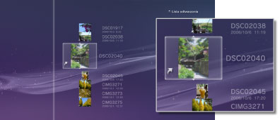

Zdjęcia > Korzystanie z list odtwarzania > Edytowanie list odtwarzania
Edytowanie list odtwarzania
Na liście odtwarzania można dodawać lub usuwać obrazy, a także zmieniać ich kolejność.
Dodawanie obrazów do list odtwarzania
1. |
Wybierz opcje |
|---|---|
2. |
Wybierz listę odtwarzania do edycji, a następnie naciśnij przycisk . |
3. |
Wybierz opcję [Edytuj].
|
4. |
Naciśnij przycisk |
 (Zdjęcia) >
(Zdjęcia) >  (Listy odtwarzania).
(Listy odtwarzania).
 , a następnie spośród obrazów zapisanych w pamięci masowej systemu wybierz obraz, który chcesz dodać do listy odtwarzania.
, a następnie spośród obrazów zapisanych w pamięci masowej systemu wybierz obraz, który chcesz dodać do listy odtwarzania. , aby zakończyć edycję.
, aby zakończyć edycję.Usuwanie obrazów z list odtwarzania
1. |
Wybierz opcje |
|---|---|
2. |
Wybierz listę odtwarzania do edycji, a następnie naciśnij przycisk . |
3. |
Wybierz opcję [Edytuj]. |
4. |
Wybierz obraz, który chcesz usunąć z listy odtwarzania, a następnie naciśnij przycisk |
 . Obraz zostanie usunięty z listy odtwarzania. Po zakończeniu usuwania obrazów naciśnij przycisk
. Obraz zostanie usunięty z listy odtwarzania. Po zakończeniu usuwania obrazów naciśnij przycisk Wskazówki
- Usunięcie obrazu z listy odtwarzania nie oznacza usunięcia pliku obrazu z pamięci masowej systemu.
- Jeśli obraz, który został dodany do listy odtwarzania, zostanie usunięty z pamięci masowej systemu, zostanie też automatycznie usunięty z listy odtwarzania.
Zmiana kolejności obrazów na listach odtwarzania
1. |
Wybierz opcje |
|---|---|
2. |
Wybierz listę odtwarzania do edycji, a następnie naciśnij przycisk . |
3. |
Wybierz opcję [Edytuj]. |
4. |
Wybierz obraz, który chcesz przenieść, a następnie naciśnij przycisk  |
5. |
Za pomocą przycisków |
 .
.
 przenieś obraz na żądaną pozycję, a następnie naciśnij przycisk
przenieś obraz na żądaną pozycję, a następnie naciśnij przycisk